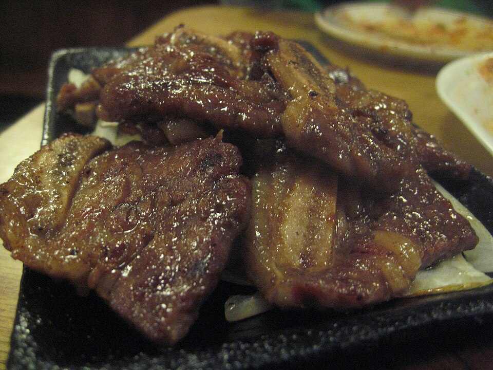

14-Hour Hickory Smoking
Our briskets and pork shoulders spend up to 14 hours over seasoned North Carolina hickory logs at a steady 225 degrees Fahrenheit, creating deep mahogany bark and a classic pink smoke ring.
Southern barbecue is defined by smoke and patience; Korean culinary tradition is defined by bold marinades and fermentation. At Seoul Food Meat Company, we unite these two great food cultures in our smokers, infusing 14-hour hickory-smoked beef brisket, charred short ribs, and pork belly with rich umami glazes.

Where old-school Carolina woodcraft meets Seoul street food mastery.
Our briskets and pork shoulders spend up to 14 hours over seasoned North Carolina hickory logs at a steady 225 degrees Fahrenheit, creating deep mahogany bark and a classic pink smoke ring.
For our LA Galbi short ribs, we blend fresh Asian pears, garlic, ginger, and aged soy sauce. The natural calpain enzymes in pear gently break down beef connective tissue, producing unmatched tenderness.
Instead of standard molasses-heavy barbecue sauce, we craft our house glaze with fermented Korean red pepper paste (gochujang), raw clover honey, toasted sesame, and vinegar for complex heat.